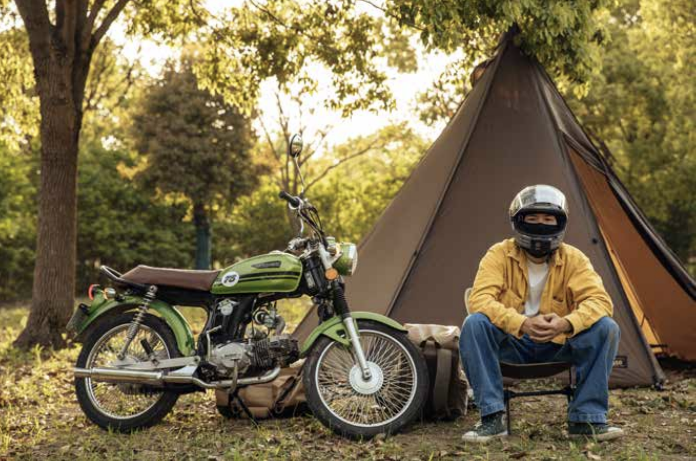

He calls himself “Carbonized Pinecone.” Twice a month, he rides a small motorbike out of Shanghai for a two-day solo camp— not to “find a tribe,” but to recover a boundary: no work-social exhaustion, no performance, just doing what he wants.

This piece is written through a person’s rhythms: month-by-month solo camps, a first “failed” night at Nanhuizui, and a later pilgrimage to Yuru Camp’s Fuji locations. It follows how one young worker turns camping into a practical method of recovery—quiet, procedural, and deliberately not social.
Excerpt 1: Camping Alone
On weekends, Carbonized Pinecone often prepares to go camping alone. This time, he set the theme of his trip as “vintage motorbike.” Living in Shanghai, he never shows his face publicly. In his videos, he usually wears a helmet, rides a small motorbike, and camps by himself.
Over the past three years, camping has become part of his life. Like many contemporary urban workers, he uses weekends to plan camping trips around Shanghai, usually twice a month.
Although he chooses to camp alone, Carbonized Pinecone is by no means socially withdrawn. He simply enjoys camping by himself.
Excerpt 2: A Failed Trip, and a Turning Point
His fascination with solo camping began in 2018. One night, he and several friends acted on impulse, knocked on the door of an outdoor shop on Huaihai Road after midnight, bought camping gear, and drove to Nanhuizui on the outskirts of the city.
The young people lit a bonfire on the beach, drank, chatted, and soon fell asleep. Carbonized Pinecone, however, remained awake, sitting by the fire to keep watch.
It was then that he suddenly realized he was not happy. The excited fantasies he had before departure were shattered upon arrival; nothing turned out as he had expected.
Strangely, during the latter half of the night, his feelings gradually became pleasant. Watching the flickering fire and hearing waves crash against the shore, he suddenly felt the burdens weighing on him lift away.
Excerpt 3: Slowing Down
In his view, many people in China have yet to distinguish between camping and wilderness survival. “Camping leans toward leisure and everyday life—it allows you to engage with nature. Wilderness survival is more like physical training, meant to strengthen both body and will.”
Since the goal is relaxation, safe and regulated campsites—with toilets, showers, drinking water, and firewood—become especially important.